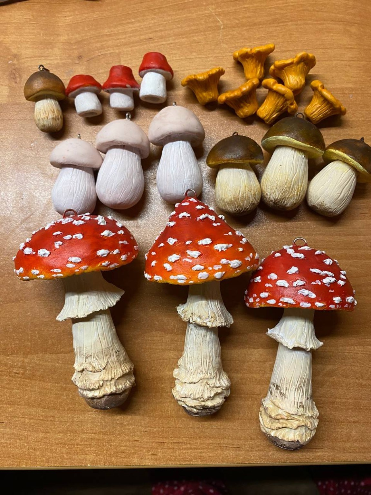

Первая встреча
Некоторые легенды ищут своего Хранителя.
«Мастерская Веры» — мир авторских фигурок, где каждая работа получает имя, характер и историю.
Жители
Те, кто уже пришёл

Карта миров
Откуда приходят Жители
Древние Существа
Драконы и создания, чьи истории старше человеческой памяти.

Зимние Легенды
Щелкунчики, короли и персонажи, которые приходят вместе со снегом.

Русские Сказки
Сирин и другие образы, выросшие из старых легенд и народной памяти.

Королевства
Праздничные кони, придворные и маленькие герои исчезнувших дворцов.
Путь к Хранителю
Не коробка, а первая глава нового дома
Житель отправляется в путь бережно упакованным. Вместе с ним могут идти паспорт, история и небольшие детали, превращающие получение работы в настоящее событие.
Доставка и упаковка
Новая глава
Мухоморное безумие
Первые ёлочные игрушки Веры начались с партии всего из пяти мухоморов. Эксперимент неожиданно превратился в настоящий ажиотаж.
Прочитать историю